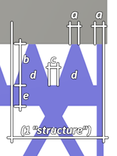

<div id="supportPropertyConnection_structure_connect_plat_width"><ul>
<li>ストリップには適用されません。</li>
<li>三角形の場合、これはポリラインの始点にある垂直線、または輪郭にのみ適用されます。</li>
<li>分割点の場合、これは X 字型接続の「中央部のくびれ」です。</li>
</ul>
<p>値は 0 から 4 mm の間である必要があります</p>
<table class="tipTable" cellspacing="10">
<tr>
<td><center></center></td>
</tr><tr>
<td><center><p><b>接続パラメータ</b><br><em><b>a</b> は接続幅をマークします。</em></p></center></td>
</tr></table>
</div>